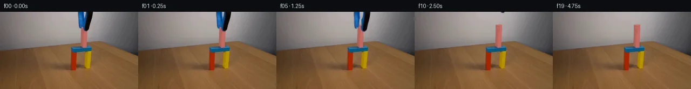

![首帧]()

Round 00
2026-11-05T18:24:50.262011+00:00像素候选变化代码 +175/−0inspection 更新
pixels 860bf77afd1e6560 · code d773d0be2402d866
查看本轮 generate.py 真实 diff
--- previous/generate.py
+++ current/generate.py
@@ -0,0 +1,175 @@
+"""Source-image pixel compositing; no external assets or rendering engine."""
+from pathlib import Path
+import json
+import numpy as np
+import cv2
+from scipy.ndimage import distance_transform_edt, binary_erosion
+from PIL import Image, ImageDraw
+from artifact_io import save
+
+ROOT = Path(__file__).resolve().parent
+W, H = 256, 144
+SOURCE = np.asarray(Image.open(ROOT / 'first_frame.png').convert('RGB'))
+S = SOURCE.astype(np.float32)
+Y, X = np.mgrid[:H, :W]
+
+
+def polygon(points, scale=8):
+ im = Image.new('L', (W * scale, H * scale))
+ ImageDraw.Draw(im).polygon([(round(x * scale), round(y * scale)) for x, y in points], fill=255)
+ return np.asarray(im.resize((W, H), Image.Resampling.LANCZOS)).astype(np.float32) / 255
+
+
+def inferred_wall():
+ # Smooth gray wall inferred exclusively from unoccluded adjacent source pixels.
+ use = (X >= 128) & (X <= 186) & (Y <= 48)
+ use &= ~((X >= 141) & (X <= 175))
+ xx = (X - 158) / 32
+ yy = Y / 48
+ terms = np.stack([np.ones_like(xx), xx, yy, xx * xx, xx * yy, yy * yy], axis=-1)
+ result = np.empty_like(S)
+ for c in range(3):
+ coef = np.linalg.lstsq(terms[use], S[..., c][use], rcond=None)[0]
+ result[..., c] = terms @ coef
+ return np.clip(result, 0, 255)
+
+
+# Concealed upper end: two vertical faces and a small sloping top face.
+wall = inferred_wall()
+side = polygon([(150.3, 24.0), (154.6, 25.2), (153.8, 38.5), (149.8, 37.9)])
+front = polygon([(154.6, 25.2), (162.0, 23.9), (161.7, 37.5), (153.8, 38.5)])
+top = polygon([(150.3, 24.0), (158.0, 22.7), (162.0, 23.9), (154.6, 25.2)])
+concealed = wall.copy()
+# Match the visible block's side color and slightly graduated front shading.
+side_color = np.zeros_like(S) + [177.0, 99.0, 92.0]
+front_color = np.zeros_like(S)
+grad = np.clip((X - 154.1) / 5, 0, 1)
+for c, (a, b) in enumerate(zip([181, 99, 93], [196, 108, 102])):
+ front_color[..., c] = a + (b - a) * grad - 0.02 * (Y - 30)
+top_color = np.zeros_like(S) + [206.0, 125.0, 119.0]
+for mask, color in [(side, side_color), (front, front_color), (top, top_color)]:
+ concealed = concealed * (1 - mask[..., None]) + color * mask[..., None]
+
+# Identify the blue/black grabber's solid interior and recover fractional edge mattes.
+roi = (X >= 143) & (X <= 173) & (Y <= 36)
+blue = (S[..., 2] - S[..., 0] > 28) & (S[..., 0] < 115)
+black = (S[..., 0] < 65) & (S[..., 1] < 70) & (S[..., 2] < 90)
+core = roi & (blue | black)
+inside = binary_erosion(core, iterations=1)
+# A narrow boundary band includes antialiasing and the bottom tip's contact fringe.
+dist, nearest = distance_transform_edt(~inside, return_indices=True)
+nearest_color = S[nearest[0], nearest[1]]
+v = nearest_color - concealed
+alpha = np.clip(np.sum((S - concealed) * v, axis=2) / (np.sum(v * v, axis=2) + 1e-6), 0, 1)
+alpha[inside] = 1
+support = roi & (dist <= 2.3)
+alpha *= support
+# Do not classify the exposed pink strip as a foreground tool edge.
+exposed_pink = (S[..., 0] - S[..., 1] > 57) & (S[..., 0] - S[..., 2] > 55) & (S[..., 0] > 150)
+alpha[exposed_pink & ~core] = 0
+# Visible salmon pixels at row 36 retain a small dark fringe from the tool.
+for x in range(158, 162):
+ alpha[36, x] = np.clip((front_color[36, x, 0] - S[36, x, 0]) / 180, 0, .22)
+support = alpha > 0.008
+alpha[~support] = 0
+
+# Static plate: preserve every original pixel except the actual grabber footprint.
+plate = S.copy()
+plate[support] = concealed[support]
+# Premultiplied tool color gives exact source reconstruction at its original pose.
+premult = S - (1 - alpha[..., None]) * plate
+premult *= support[..., None]
+premult = np.clip(premult, 0, 255 * alpha[..., None])
+
+# Split the two jaws along their existing narrow connection. Keep real surface texture.
+split = X < (156.0 - .08 * Y)
+left_a = alpha * split
+right_a = alpha * (~split)
… diff truncated; 88 more lines …